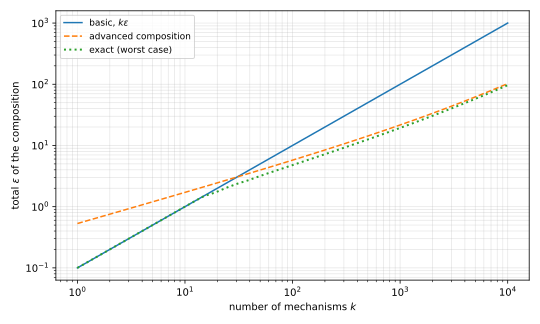

6 Advanced Composition
When you run \(k\) private analyses on the same data, basic composition says that their privacy costs add up. This chapter shows that the total cost grows much more slowly, about as \(\sqrt{k}\), if you accept a small extra failure probability. The proof turns each step into one simple pair of outputs with four outcomes. Then it bounds \(k\) copies of that pair with Hoeffding’s inequality.
6.1 The theorem
Write \(D \sim D'\) for neighbouring datasets, which differ in one record (the replace-one relation). Recall from the approximate differential privacy (DP) chapter that a mechanism \(M\) is \((\varepsilon,\delta)\)-DP if, for all neighbours \(D \sim D'\) and all events \(S\),
\[ \Pr[M(D)\in S] \le e^{\varepsilon}\Pr[M(D')\in S] + \delta . \tag{6.1}\]
The proofs below compare two output distributions at a time, so the next definition names this condition for a pair of random variables.
Definition 6.1 (Indistinguishable pair) Let \(\varepsilon, \delta \ge 0\). Two random variables \(A\) and \(B\) with values in the same space are \((\varepsilon,\delta)\)-indistinguishable if, for every event \(S\),
\[ \Pr[A\in S] \le e^\varepsilon \Pr[B\in S] + \delta \qquad\text{and}\qquad \Pr[B\in S] \le e^\varepsilon \Pr[A\in S] + \delta . \tag{6.2}\]
So \(M\) is \((\varepsilon,\delta)\)-DP exactly when \(M(D)\) and \(M(D')\) are \((\varepsilon,\delta)\)-indistinguishable for every pair of neighbours.
The theorem is about the adaptive composition of Definition 4.4: mechanisms \(M_1, \dots, M_k\) run in order on the same \(D\), where \(M_j(D; y_{<j})\) may depend on the earlier outputs \(y_{<j} = (y_1,\dots,y_{j-1})\), and the composition outputs the whole transcript \((y_1,\dots,y_k)\).
Basic composition, proved in the two previous chapters, says that if each \(M_j(\,\cdot\,; y_{<j})\) is \((\varepsilon,\delta)\)-DP for every fixed \(y_{<j}\), then \(M\) is \((k\varepsilon, k\delta)\)-DP. The theorem of this chapter improves the first parameter. Throughout, every output space is countable, so that probabilities are sums over outcomes.
Theorem 6.1 (Advanced composition) Let \(\varepsilon \ge 0\), \(\delta \in [0,1)\) and \(\delta' \in (0,1)\). Let \(M\) be the adaptive composition of \(k\) mechanisms such that \(M_j(\,\cdot\,; y_{<j})\) is \((\varepsilon,\delta)\)-DP for every \(j\) and every \(y_{<j}\). Then \(M\) is \((\tilde\varepsilon, \tilde\delta)\)-DP with
\[ \tilde\varepsilon = \varepsilon\sqrt{2k\ln(1/\delta')} + k\varepsilon\,\frac{e^\varepsilon - 1}{e^\varepsilon + 1}, \qquad \tilde\delta = k\delta + \delta' . \tag{6.3}\]
The first term of \(\tilde\varepsilon\) is the important one, and it grows as \(\varepsilon\sqrt k\) instead of \(k\varepsilon\). The second term is small when \(\varepsilon\) is small. Its factor is \((e^\varepsilon-1)/(e^\varepsilon+1) = \tanh(\varepsilon/2)\), and \(\tanh x \le x\) for \(x \ge 0\), so the term is at most \(k\varepsilon^2/2\). That is also at most \(k\varepsilon(e^\varepsilon - 1)\), because \(e^\varepsilon - 1 \ge \varepsilon\), so the theorem implies the weaker form that the previous chapter quoted. The extra slack \(\delta'\) is a free parameter, and a larger \(\delta'\) lowers \(\tilde\varepsilon\), so the theorem trades a bigger \(\delta\) for a smaller \(\varepsilon\).
The proof is in Section 6.3. Before it, Example 6.1 and Figure 6.1 say how much the theorem gains.
Example 6.1 Take \(\varepsilon = 0.1\) and \(\delta' = 10^{-6}\), so that \(\ln(1/\delta') = 13.8155\) and \(\tanh(0.05) = 0.04996\). For \(k = 100\) mechanisms, basic composition gives \(10\). Advanced composition gives \(0.1\sqrt{200 \times 13.8155} + 100 \times 0.1 \times 0.04996 = 5.257 + 0.500 = 5.756\). For \(k = 1{,}000\), basic composition gives \(100\) and advanced composition gives \(16.623 + 4.996 = 21.618\). Advanced composition is the smaller of the two from \(k = 31\) on.

The exact curve in Figure 6.1 shows that Theorem 6.1 is close to the truth, within 7% of it at \(k = 10{,}000\). So growth as \(\varepsilon\sqrt{k\ln(1/\delta')}\) is how privacy really degrades, not an artefact of the proof. Kairouz, Oh and Viswanath (2015) computed the exact optimal \(\tilde\varepsilon\), which is tighter but harder to use.
With a total budget \(\varepsilon_{\mathrm{total}}\) for \(k\) analyses, you can invert Equation 6.3. The next corollary gives a simple choice that always works.
Corollary 6.1 Let \(\varepsilon_{\mathrm{total}} \in (0,1]\) and \(\delta' \in (0, 1/2]\). If each of \(k\) adaptively composed mechanisms is \((\varepsilon,\delta)\)-DP with
\[ \varepsilon = \frac{\varepsilon_{\mathrm{total}}}{2\sqrt{2k\ln(1/\delta')}}, \tag{6.4}\]
then the composition is \((\varepsilon_{\mathrm{total}}, k\delta + \delta')\)-DP.
Proof.
- By Theorem 6.1, the composition is \((\tilde\varepsilon, k\delta+\delta')\)-DP. Its first term is \(\varepsilon\sqrt{2k\ln(1/\delta')} = \varepsilon_{\mathrm{total}}/2\).
- The second term is \(k\varepsilon\tanh(\varepsilon/2) \le k\varepsilon^2/2\), because \(\tanh x \le x\). Substituting \(\varepsilon\) gives \(k\varepsilon^2/2 = \varepsilon_{\mathrm{total}}^2/(16\ln(1/\delta'))\).
- Since \(\delta' \le 1/2\), we have \(\ln(1/\delta') \ge \ln 2 > 1/8\), and since \(\varepsilon_{\mathrm{total}} \le 1\), the second term is at most \(\varepsilon_{\mathrm{total}}^2/2 \le \varepsilon_{\mathrm{total}}/2\).
- Adding the two terms gives \(\tilde\varepsilon \le \varepsilon_{\mathrm{total}}\). A mechanism that is \((\tilde\varepsilon,\tilde\delta)\)-DP is also \((\varepsilon_{\mathrm{total}},\tilde\delta)\)-DP for every \(\varepsilon_{\mathrm{total}} \ge \tilde\varepsilon\).
The corollary is conservative by about a factor of \(2\). With \(\varepsilon_{\mathrm{total}} = 1\), \(k = 1{,}000\) and \(\delta' = 10^{-6}\), it allows \(\varepsilon = 0.00301\) per mechanism, for which Equation 6.3 gives a total of only \(0.5045\). Solving Equation 6.3 numerically allows \(\varepsilon = 0.00591\), almost twice as much, and basic composition with that \(\varepsilon\) would give a total of \(5.911\).
The gain matters most when the number of analyses grows with the problem, as in the next example.
Example 6.2 (Mean estimation with the Laplace mechanism) Each of \(n\) people holds a vector \(x_i \in \{0,1\}^d\), and the analyst wants the mean \(f(D) = \frac1n\sum_i x_i\). Recall the Laplace mechanism: if \(f\) has \(\ell_1\) sensitivity \(\Delta_1 f\), meaning that \(\|f(D) - f(D')\|_1 \le \Delta_1 f\) for all neighbours, then adding independent noise from the Laplace distribution with scale \(\Delta_1 f/\varepsilon\) to each coordinate is \(\varepsilon\)-DP. A Laplace variable with scale \(b\) has mean \(0\) and variance \(2b^2\), so the expected squared \(\ell_2\) error of the noise vector is \(2db^2\).
All coordinates at once. Replacing one person changes each coordinate of the mean by at most \(1/n\), so \(\Delta_1 f = d/n\), and the noise has scale \(d/(n\varepsilon)\). The root mean squared \(\ell_2\) error is \(\sqrt{2d}\,d/(n\varepsilon) = \sqrt2\, d^{3/2}/(n\varepsilon)\).
One coordinate at a time. Each coordinate is a mechanism with sensitivity \(1/n\), released with Laplace noise of scale \(1/(n\varepsilon_1)\), which makes it \(\varepsilon_1\)-DP. With \(\varepsilon_1\) from Corollary 6.1 for \(k = d\) and \(\delta = 0\), the \(d\) releases together are \((\varepsilon, \delta')\)-DP for \(\varepsilon \le 1\). The root mean squared error is
\[ \frac{\sqrt{2d}}{n\varepsilon_1} = \frac{\sqrt{2d}\cdot 2\sqrt{2d\ln(1/\delta')}}{n\varepsilon} = \frac{4d\sqrt{\ln(1/\delta')}}{n\varepsilon} . \tag{6.5}\]
The error now grows as \(d\) instead of \(d^{3/2}\), which is the order the Gaussian mechanism achieves. Take \(n = 100{,}000\), \(\varepsilon = 1\) and \(\delta' = 10^{-6}\). At \(d = 1{,}000\), the two errors are \(0.4472\) and \(0.1487\). At \(d = 10{,}000\), they are \(14.14\) and \(1.487\), nearly ten times apart. The price is the move from pure to approximate DP.
6.2 Reduction to four outcomes
A pair of output distributions \(M_j(D)\) and \(M_j(D')\) can be complicated. The first step of the proof replaces every such pair by the simplest \((\varepsilon,\delta)\)-indistinguishable pair. It has two ordinary outcomes, \(0\) and \(1\), whose probabilities differ by the factor \(e^\varepsilon\), and two catastrophic outcomes, each with probability \(\delta\), which reveal which distribution the sample came from.
Definition 6.2 (The four-outcome pair) For \(\varepsilon \ge 0\) and \(\delta \in [0,1)\), let \(U\) and \(V\) take values in \(\{0, 1, \text{I am } U, \text{I am } V\}\) with
\[ \begin{aligned} \Pr[U = 0] &= \frac{e^\varepsilon(1-\delta)}{1+e^\varepsilon}, & \Pr[U = 1] &= \frac{1-\delta}{1+e^\varepsilon}, & \Pr[U = \text{I am } U] &= \delta, & \Pr[U = \text{I am } V] &= 0, \\ \Pr[V = 0] &= \frac{1-\delta}{1+e^\varepsilon}, & \Pr[V = 1] &= \frac{e^\varepsilon(1-\delta)}{1+e^\varepsilon}, & \Pr[V = \text{I am } U] &= 0, & \Pr[V = \text{I am } V] &= \delta . \end{aligned} \tag{6.6}\]
For \(\delta = 0\) this is randomized response with truth probability \(e^\varepsilon/(1+e^\varepsilon)\), from the first chapter of this part. Here \(U\) is the report of a person whose bit is \(0\) and \(V\) that of a person whose bit is \(1\). The first check is that the pair meets the condition it stands for.
Lemma 6.1 The pair \(U, V\) is \((\varepsilon,\delta)\)-indistinguishable.
Proof.
- On the outcomes \(0\) and \(1\), the ratio \(\Pr[U = t]/\Pr[V = t]\) is \(e^\varepsilon\) or \(e^{-\varepsilon}\), so \(\Pr[U = t] \le e^\varepsilon\Pr[V = t]\).
- Take an event \(S\). Sum step 1 over the outcomes of \(S\) in \(\{0,1\}\). The outcome “I am \(U\)” adds at most \(\delta\) to \(\Pr[U \in S]\), and “I am \(V\)” adds nothing. So \(\Pr[U\in S] \le e^\varepsilon \Pr[V\in S] + \delta\).
- Swapping the labels \(0 \leftrightarrow 1\) and “I am \(U\)” \(\leftrightarrow\) “I am \(V\)” turns the distribution of \(U\) into that of \(V\) and back, so the same argument gives the other inequality.
Indistinguishability survives any further processing, as privacy does. The proof is that of post-processing in the approximate DP chapter, written for a pair of random variables.
Lemma 6.2 (Post-processing) Let \(A, B\) be \((\varepsilon,\delta)\)-indistinguishable, and let \(F\) be a randomized map whose coins are independent of \(A\) and \(B\). Then \(F(A)\) and \(F(B)\) are \((\varepsilon,\delta)\)-indistinguishable.
Proof.
- Functions with values in \([0,1]\). Let \(g\) take values in \([0,1]\). The proof of Lemma 5.5 uses only the bound of the definition on events, so it applies to \(A\) and \(B\) unchanged and gives \(\mathbb E[g(A)] \le e^\varepsilon\,\mathbb E[g(B)] + \delta\).
- Post-processing. Fix an event \(S\) and let \(g(a) = \Pr[F(a)\in S]\), a probability over the coins of \(F\). Because those coins are independent of \(A\), \(\Pr[F(A)\in S] = \mathbb E[g(A)]\), and likewise for \(B\).
- Step 1 applied to \(g\) gives \(\Pr[F(A)\in S] \le e^\varepsilon\Pr[F(B)\in S] + \delta\). The other direction is the same with \(A\) and \(B\) swapped.
The four-outcome pair is the hardest \((\varepsilon,\delta)\)-indistinguishable pair to tell apart, in a strong sense. One randomized map produces any other such pair \(A, B\) from \(U, V\).
Theorem 6.2 (Simulation by the four-outcome pair) Let \(\varepsilon \ge 0\) and \(\delta \in [0,1)\), and let \(A, B\) be \((\varepsilon,\delta)\)-indistinguishable random variables on a countable space. Then there is a randomized map \(F\) such that \(F(U)\) has the distribution of \(A\) and \(F(V)\) has the distribution of \(B\).
The map sends each of the four outcomes to a distribution on the space. The outcome “I am \(U\)” covers the excess of \(A\) on outcomes \(y\) that are more than \(e^\varepsilon\) times as likely under \(A\) as under \(B\), and “I am \(V\)” covers the reverse excess. The outcome \(0\) puts more weight where \(A\) is the more likely of the two, and \(1\) where \(B\) is. For \(\delta > 0\) these four distributions need care. Kairouz, Oh and Viswanath (2015) prove that case with hypothesis tests and Blackwell’s theorem on the comparison of statistical experiments. We prove the case \(\delta = 0\), which already gives the theorem for pure DP.
Proof. Proof for \(\delta = 0\). Write \(p(y) = \Pr[A = y]\) and \(q(y) = \Pr[B = y]\).
Applying the definition to the single outcome \(\{y\}\) gives \(p(y) \le e^\varepsilon q(y)\) and \(q(y) \le e^\varepsilon p(y)\). If \(\varepsilon = 0\), then \(p = q\), and \(F\) can ignore its input and output a sample of \(A\). Assume \(\varepsilon > 0\) from now on.
Define
\[ P_0(y) = \frac{e^\varepsilon p(y) - q(y)}{e^\varepsilon - 1}, \qquad P_1(y) = \frac{e^\varepsilon q(y) - p(y)}{e^\varepsilon - 1} . \tag{6.7}\]
Both are non-negative by step 1, and each sums to \((e^\varepsilon - 1)/(e^\varepsilon - 1) = 1\) over \(y\), so they are probability distributions.
Let \(F\) map the input \(0\) to a sample from \(P_0\) and the input \(1\) to a sample from \(P_1\). With \(\delta = 0\), \(U\) is \(0\) with probability \(e^\varepsilon/(1+e^\varepsilon)\) and \(1\) otherwise. So \(F(U)\) equals \(y\) with probability
\[ \frac{e^\varepsilon P_0(y) + P_1(y)}{1+e^\varepsilon} = \frac{e^{2\varepsilon}p(y) - e^\varepsilon q(y) + e^\varepsilon q(y) - p(y)}{(1+e^\varepsilon)(e^\varepsilon - 1)} = p(y). \tag{6.8}\]
In the same way, \(F(V)\) equals \(y\) with probability \((P_0(y) + e^\varepsilon P_1(y))/(1+e^\varepsilon) = q(y)\).
Applying Theorem 6.2 once per step of an adaptive composition reduces the whole transcript to a map of \(k\) independent copies of the four-outcome pair.
Theorem 6.3 Let \(M\) be the adaptive composition of \(M_1,\dots,M_k\) as in Theorem 6.1, and fix neighbours \(D \sim D'\). Let \(U_1,\dots,U_k\) be independent copies of \(U\) and \(V_1,\dots,V_k\) independent copies of \(V\). Then there is a randomized map \(F^*\) such that \(F^*(U_1,\dots,U_k)\) has the distribution of \(M(D)\) and \(F^*(V_1,\dots,V_k)\) has the distribution of \(M(D')\).
Proof.
- Fix a step \(j\) and an earlier transcript \(y_{<j}\). The mechanism \(M_j(\,\cdot\,;y_{<j})\) is \((\varepsilon,\delta)\)-DP, so its outputs \(M_j(D; y_{<j})\) and \(M_j(D'; y_{<j})\) are \((\varepsilon,\delta)\)-indistinguishable. Theorem 6.2 gives a randomized map \(F_j^{y_{<j}}\) that turns \(U\) into \(M_j(D; y_{<j})\) and \(V\) into \(M_j(D'; y_{<j})\).
- Define \(F^*\) on an input \((z_1,\dots,z_k)\) step by step. Set \(y_1 = F_1(z_1)\), then \(y_2 = F_2^{y_1}(z_2)\), and in general \(y_j = F_j^{y_{<j}}(z_j)\), with fresh coins at each step. Output \((y_1,\dots,y_k)\).
- By induction on \(j\), the prefix \((y_1,\dots,y_j)\) computed from \((U_1,\dots,U_k)\) has the distribution of the first \(j\) outputs of \(M(D)\). For \(j=1\) this is step 1. Given the prefix \(y_{<j}\), the input \(U_j\) is still a fresh copy of \(U\), because it is independent of \(U_1,\dots,U_{j-1}\) and of the coins used so far. So \(y_j = F_j^{y_{<j}}(U_j)\) has the distribution of \(M_j(D;y_{<j})\), which is how \(M\) draws its \(j\)-th output.
- The same induction with \(V_1,\dots,V_k\) gives the distribution of \(M(D')\).
The map \(F^*\) depends on \(D\) and \(D'\), but that is harmless, because privacy is a statement about one pair of neighbours at a time and Lemma 6.2 applies to any map. So it remains to show that \((U_1,\dots,U_k)\) and \((V_1,\dots,V_k)\) are \((\tilde\varepsilon,\tilde\delta)\)-indistinguishable.
6.3 Composing the four-outcome pair
Write \(\mathbf U = (U_1,\dots,U_k)\) and \(\mathbf V = (V_1,\dots,V_k)\). As in the approximate DP chapter, the privacy loss of an outcome compares how likely it is under \(\mathbf U\) and under \(\mathbf V\). An outcome that is possible under \(\mathbf U\) but impossible under \(\mathbf V\) has infinite loss, and for an outcome \(z\) that is possible under \(\mathbf V\), the privacy loss is
\[ L(z) = \ln\frac{\Pr[\mathbf U = z]}{\Pr[\mathbf V = z]} . \tag{6.9}\]
The plan is to show that, for \(z\) drawn from \(\mathbf U\), the loss rarely exceeds \(\tilde\varepsilon\). Two kinds of outcome are bad. An outcome that contains “I am \(U\)” is impossible under \(\mathbf V\), so its loss is infinite, which happens with probability about \(k\delta\). On the other outcomes, the loss is a sum of \(k\) independent terms, and Hoeffding’s inequality bounds the chance that it strays far above its mean by \(\delta'\). The first step computes the loss on the outcomes with no catastrophe, in which every coordinate is \(0\) or \(1\).
Lemma 6.3 For every \(z \in \{0,1\}^k\), the privacy loss is \(L(z) = \varepsilon\sum_{j=1}^k (1 - 2z_j)\).
Proof.
- The coordinates are independent, so both probabilities factor and the log of the ratio is a sum: \(L(z) = \sum_{j=1}^k \ln\big(\Pr[U = z_j]/\Pr[V = z_j]\big)\).
- By Definition 6.2, the ratio is \(e^\varepsilon\) when \(z_j = 0\) and \(e^{-\varepsilon}\) when \(z_j = 1\). In both cases its logarithm is \(\varepsilon(1 - 2z_j)\).
Given no catastrophic outcome, the coordinates of \(\mathbf U\) are independent bits, so the loss is a sum of independent terms, each \(\varepsilon\) or \(-\varepsilon\). Hoeffding’s inequality bounds its tail.
Take \(k\) independent random variables \(W_1,\dots,W_k\), each with values in an interval \([l, u]\) of length \(u - l\). Hoeffding’s inequality bounds the chance that their sum exceeds its mean by a margin \(\tau \ge 0\) or more,
\[ \Pr\left[\sum_{j=1}^k W_j \ge \sum_{j=1}^k \mathbb E[W_j] + \tau\right] \le \exp\left(-\frac{2\tau^2}{k(u-l)^2}\right) . \tag{6.10}\]
With the loss and its tail bound, the main estimate follows: \(k\) copies of the four-outcome pair are as hard to tell apart as Theorem 6.1 claims.
Proposition 6.1 Let \(\varepsilon \ge 0\), \(\delta \in [0,1)\) and \(\delta' \in (0,1)\). Then \(\mathbf U\) and \(\mathbf V\) are \((\tilde\varepsilon,\tilde\delta)\)-indistinguishable, with \(\tilde\varepsilon\) and \(\tilde\delta\) as in Equation 6.3.
Proof.
The events. Let \(E_1\) be the event that some coordinate of \(\mathbf U\) is “I am \(U\)”. Let \(G\) be the set of good outcomes, the \(z \in \{0,1\}^k\) with \(L(z) \le \tilde\varepsilon\). Every outcome \(z\) with \(\Pr[\mathbf U = z] > 0\) that is not in \(G\) either lies in \(E_1\) or lies in \(\{0,1\}^k\) with \(L(z) > \tilde\varepsilon\). Outcomes containing “I am \(V\)” have probability \(0\) under \(\mathbf U\).
The first bad event. Each coordinate avoids “I am \(U\)” with probability \(1-\delta\), independently, so \(\Pr[E_1] = 1 - (1-\delta)^k\). Bernoulli’s inequality \((1-\delta)^k \ge 1 - k\delta\) gives \(\Pr[E_1] \le k\delta\).
The coordinates given no catastrophe. Given that \(U_j\) is not “I am \(U\)”, it is \(0\) with probability \(\frac{e^\varepsilon(1-\delta)/(1+e^\varepsilon)}{1-\delta} = \frac{e^\varepsilon}{1+e^\varepsilon}\) and \(1\) otherwise. Conditioned on the complement \(\bar E_1\), the coordinates stay independent, because \(\bar E_1\) is an intersection of independent events, one per coordinate.
The mean of the loss. By Lemma 6.3, given \(\bar E_1\) the loss is \(\sum_j W_j\) with \(W_j = \varepsilon(1-2U_j)\). Each \(W_j\) is \(\varepsilon\) with probability \(e^\varepsilon/(1+e^\varepsilon)\) and \(-\varepsilon\) otherwise, so
\[ \mathbb E\Big[\sum_{j=1}^k W_j \,\Big|\, \bar E_1\Big] = k\varepsilon\,\frac{e^\varepsilon - 1}{e^\varepsilon + 1}, \tag{6.11}\]
which is the second term of \(\tilde\varepsilon\).
The second bad event. If \(\varepsilon = 0\), the loss is \(0 \le \tilde\varepsilon\) and there is nothing to bound. Otherwise apply Equation 6.10, conditioned on \(\bar E_1\), with \([l,u] = [-\varepsilon,\varepsilon]\) and \(\tau = \varepsilon\sqrt{2k\ln(1/\delta')}\), the first term of \(\tilde\varepsilon\). The exponent is \(2\tau^2/(4k\varepsilon^2) = \ln(1/\delta')\), so
\[ \Pr\big[L(\mathbf U) > \tilde\varepsilon \,\big|\, \bar E_1\big] \le \delta' . \tag{6.12}\]
Multiplying by \(\Pr[\bar E_1] \le 1\) bounds the probability that \(\mathbf U \in \{0,1\}^k\) and \(L(\mathbf U) > \tilde\varepsilon\) by \(\delta'\).
Assembly. Take any event \(S\). Split it into \(S \cap G\) and the rest. On \(G\), each outcome has \(\Pr[\mathbf U = z] \le e^{\tilde\varepsilon}\Pr[\mathbf V = z]\) by the definition of \(L\). By step 1, the rest has probability at most that of the two bad events. Steps 2 and 5 then give
\[ \Pr[\mathbf U \in S] \le e^{\tilde\varepsilon}\Pr[\mathbf V \in S\cap G] + k\delta + \delta' \le e^{\tilde\varepsilon}\Pr[\mathbf V \in S] + \tilde\delta . \tag{6.13}\]
The other direction. Swapping the labels \(0 \leftrightarrow 1\) and “I am \(U\)” \(\leftrightarrow\) “I am \(V\)” in every coordinate maps \(\mathbf U\) to \(\mathbf V\) and back. The same argument then gives \(\Pr[\mathbf V \in S] \le e^{\tilde\varepsilon}\Pr[\mathbf U \in S] + \tilde\delta\).
So the term \(k\delta\) of \(\tilde\delta\) pays for a catastrophic outcome in some step, and \(\delta'\) pays for an unusually long run of outcomes that favour \(\mathbf U\). The proof of the theorem puts the pieces together.
Proof. Proof of Theorem 6.1. Fix neighbours \(D \sim D'\).
- By Theorem 6.3, \(M(D)\) and \(M(D')\) have the distributions of \(F^*(\mathbf U)\) and \(F^*(\mathbf V)\) for one randomized map \(F^*\).
- By Proposition 6.1, \(\mathbf U\) and \(\mathbf V\) are \((\tilde\varepsilon,\tilde\delta)\)-indistinguishable.
- By Lemma 6.2, so are \(F^*(\mathbf U)\) and \(F^*(\mathbf V)\). The neighbours were arbitrary, so \(M\) is \((\tilde\varepsilon,\tilde\delta)\)-DP.
6.4 Summary
| Result | Statement |
|---|---|
| Theorem 6.1 | \(k\) adaptive \((\varepsilon,\delta)\)-DP steps are \(\big(\varepsilon\sqrt{2k\ln(1/\delta')} + k\varepsilon\tanh(\varepsilon/2),\ k\delta+\delta'\big)\)-DP |
| Corollary 6.1 | per-step \(\varepsilon = \varepsilon_{\mathrm{total}}/(2\sqrt{2k\ln(1/\delta')})\) gives a total of \(\varepsilon_{\mathrm{total}} \le 1\) |
| Example 6.2 | Laplace noise per coordinate estimates a mean in \(\{0,1\}^d\) with error \(4d\sqrt{\ln(1/\delta')}/(n\varepsilon)\) |
| Lemma 6.1 | the four-outcome pair is \((\varepsilon,\delta)\)-indistinguishable |
| Lemma 6.2 | indistinguishability survives post-processing |
| Theorem 6.2 | every \((\varepsilon,\delta)\)-indistinguishable pair is a randomized map of the four-outcome pair |
| Theorem 6.3 | an adaptive composition is a map of \(k\) independent copies of the four-outcome pair |
| Lemma 6.3 | on \(\{0,1\}^k\), the privacy loss is \(\varepsilon\sum_j(1-2z_j)\) |
| Proposition 6.1 | \(k\) copies of the four-outcome pair are \((\tilde\varepsilon,\tilde\delta)\)-indistinguishable |
6.5 References
- Cynthia Dwork, Guy N. Rothblum and Salil Vadhan, “Boosting and Differential Privacy”, 2010. First proves the advanced composition theorem.
- Peter Kairouz, Sewoong Oh and Pramod Viswanath, “The Composition Theorem for Differential Privacy”, 2015. Proves the simulation by the four-outcome pair and finds the exact optimal composition.
- Wassily Hoeffding, “Probability Inequalities for Sums of Bounded Random Variables”, 1963. Gives the tail bound used for the privacy loss.
- Cynthia Dwork and Aaron Roth, The Algorithmic Foundations of Differential Privacy, 2014. Proves advanced composition with the privacy loss in Section 3.5, with \(k\varepsilon(e^\varepsilon - 1)\) as the second term.
- Salil Vadhan, “The Complexity of Differential Privacy”, 2017. Presents basic and advanced composition in Section 2.
- Jack Murtagh and Salil Vadhan, “The Complexity of Computing the Optimal Composition of Differential Privacy”, 2016. Shows that the exact optimal composition is hard to compute for mixed parameters.